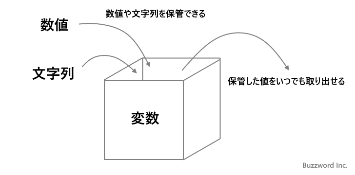
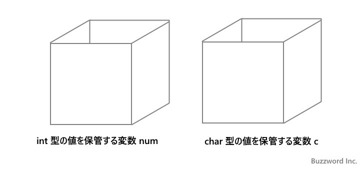
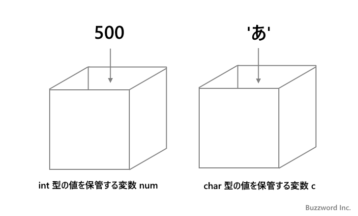
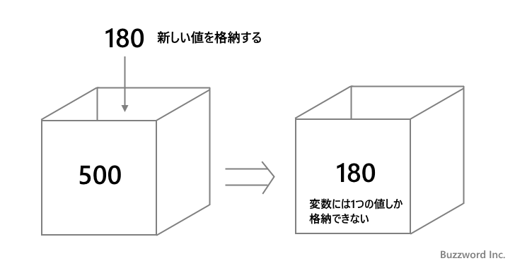
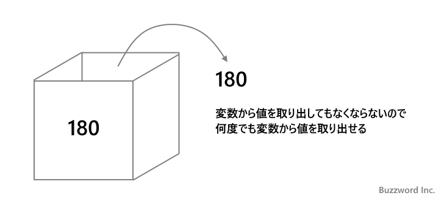
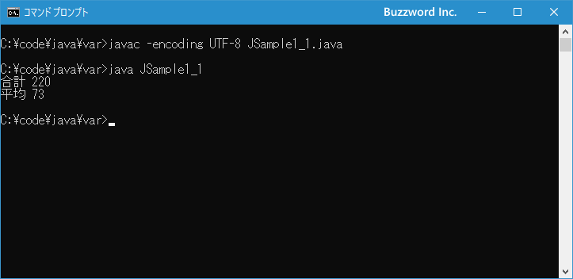

Javaにおける変数とは
変数の使い方を具体的に見ていく前に Java において変数はどのように使われるのかについて簡単に解説します。
変数とは
Java などのプログラミング言語ではデータを格納する場所として変数を使用しますが、どのように変数にデータを格納するのかはいくつか種類があります。 Java における変数は値を保管する箱のようなものです。変数には数値や文字列などを保管することができ、また変数に保管した値を取り出して参照することができます。

変数の箱には数値や文字といった値をそのものを格納しますが、配列やクラスのインスタンスを変数に格納する場合はデータそのものが格納されるのではなく、データが格納されている場所が格納されます。変数には実際の値が格納される場合と、実体は別にあり実体への参照が格納される場合があるとだけ覚えておかれれば大丈夫です。使い方は基本的に変わりません。
変数を利用するには最初に変数という箱を用意する必要があります。これを変数の宣言と呼びます。 Java では複数の変数を利用できるので、変数が区別できるように変数には名前を付けます。そして Java では変数を宣言するときにどんなデータ型の値を格納するのかを一緒に指定します。

詳しくは別のページにて解説しますが、変数の宣言は次のように行います。 int 型のデータを格納する num という名前の変数と、 char 型のデータを格納する c という名前の変数を宣言しています。
int num; char c;
変数が用意できたら変数に値を保管することができます。変数に保管できる値は、変数を作成した時に指定したデータ型と同じ型の値しか保管することができません。例えば int 型の変数には int 型の値しか保管することができません(一部例外があります)。

変数に値を保管することを「変数に値を代入する」といいます。「=」は等しいという意味ではなく、「=」の右辺にある値を左辺にある変数に代入するということを表しています。
num = 500; c = 'あ';
変数には何度でも値を保管することができます。ただ変数は一つしか値を保管できませんので、新しい値を保管するとそれまで保管していた値は参照できなくなります。

num = 500; num = 180;
変数に保管した値はいつでも参照することができます。参照しても変数に保管されている値はなくなりませんので何度でも参照できます。

プログラムの中で変数名を記述すると、その時変数に保管されている値が参照されて置き換わります。例えば次の文は変数 num に保管されている値を画面に出力します。
System.out.println(num);
Java における変数の使い方について簡単に説明しました。変数の宣言や変数への値の代入については次のページ以降で詳しく解説します。
変数を使った例
それでは変数を使った簡単な例をみながら実際の使い方をみてみます。次の例は国語と英語と数学のテストの点数の合計を出力し、その後で平均点を計算して出力しています。
System.out.println("合計 " + (58 + 72 + 90));
System.out.println("平均 " + (58 + 72 + 90) / 3);
3 つのテストの合計を計算して出力したあと、今度は平均を計算するために再度 3 つのテストの合計を計算してから 3 で除算しています。今回はまだ二回だけでしたが、テストの合計点を何度も使用する場合には合計点を計算した値を変数に保管しておき、必要な時に変数から取り出して使用すると便利です。
変数を使うと先ほどのサンプルは次のように書き換えることができます。
int sum; // 合計を格納する変数 sum = 58 + 72 + 90; System.out.println("合計 " + sum); System.out.println("平均 " + sum / 3);
変数 sum を宣言し、 3 つのテストの合計点を変数に保管しておきます。そして合計点が必要なときに変数名を記述して変数に保管されている値を参照しています。
簡単なサンプルですが、変数がどのように利用されるのかお分かりいただけましたでしょうか。
それでは簡単なサンプルプログラムを作って試してみます。テキストエディタで次のように記述したあと、 JSample1-1.java という名前で保存します。
class JSample1_1{
public static void main(String[] args){
int sum = 58 + 72 + 90;
System.out.println("合計 " + sum);
System.out.println("平均 " + sum / 3);
}
}
コンパイルを行います。
javac -encoding UTF-8 JSample1_1.java
その後で、次のように実行してください。
java JSample1_1

変数 sum を宣言すると同時に 3 つの値を加算した値を変数に代入しました。そして変数に格納されている値を取り出して画面に出力しました。
-- --
Java における変数とはどのようなものかについて解説しました。
( Written by Tatsuo Ikura )

著者 / TATSUO IKURA
初心者～中級者の方を対象としたプログラミング方法や開発環境の構築の解説を行うサイトの運営を行っています。